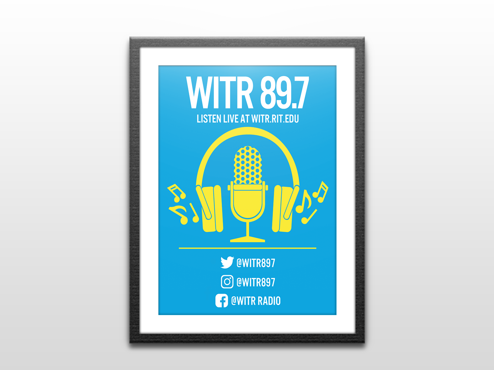

This first poster I created for my campus radio station WITR 89.7, where I work as the Assistant Events Coordinator. I really enjoyed creating this poster because of my love for the station, and I was also able to gain valuable experience using a preset style guide provided by the radio station, sticking to the brand's specific fonts, colors and styles.
These next three posters were created for Rockport, Texas to show my support in their efforts to rebuild after the disastrous events of Hurricane Harvey. With these posters I was able to focus on visual graphics and work in different styles with varying degrees of dimension.